2024年8月14–15日 · ヴァレー州
ツェルマット
- 10.1km
- 距離
- 1220m
- 下り
- ~30%
- 最大勾配
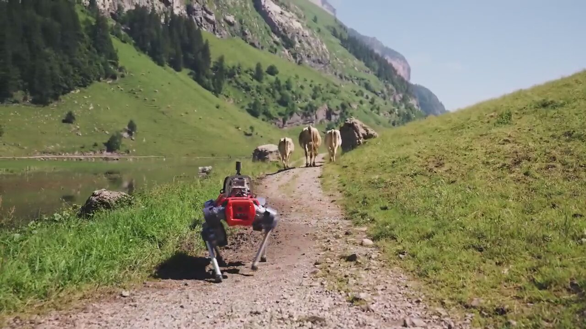
視覚言語モデルの推論と学習ベースの制御をつなぐ ― 実環境における脚式ロボットの自律移動
VLM が周囲の状況と危険度を言葉で判断し、ロボットはその情報をもとに、アルプスの登山道から街なかまで安全な歩く場所を選びます。
多様な実環境における自律ナビゲーションは、ロボティクスに残された最大の難題のひとつです。複雑な地形を走破する頑健な低レベルの運動制御と、周囲の手がかりを読み解く高レベルの推論の両方が求められるためです。本研究では、四脚ロボットがアルプスや市街地などの複雑な環境でキロメートル規模の自律移動を行えるシステム ROAM（Robust Open-world Autonomous Mobility）を提案します。ROAM は、インターネット規模のデータで事前学習された視覚言語モデル（VLM）の世界知識と、シミュレーション上の強化学習（RL）で獲得した頑健な歩行・局所計画ポリシーを組み合わせます。VLM は常識的な推論とシーンの意味理解を担い、リスクを見積もり、標識を読み取り、ナビゲーションコストを紐づけた意味ラベルを出力します。オープンボキャブラリのセグメンテーションモジュールがこれらのラベルを密なリアルタイムのリスクマップへと変換し、俊敏な歩行と局所ナビゲーションを担う2つの学習済み RL ポリシーに入力します。こうして、高レベルの VLM による推論と低レベルの物理制御を効果的に結びつけます。実環境での実験では、多種多様な複雑環境を自律的に移動できることを実証しました。ロボットは最小限の人的介入でキロメートル規模のハイキングを完走し、標識を読んで危険を回避しながら、周囲を評価して安全に足を置ける場所を見つけます。本研究は非整備環境でシステムを確実に運用するための重要な一歩である一方、VLM の信頼性や空間推論にはなお課題が残ることも明らかになりました。基盤モデルは野外ナビゲーションに不可欠な要素であるものの、それ単体で完結する解決策にはまだ至っていないことを示しています。
gravel_path 0 grass 0.5 cow 1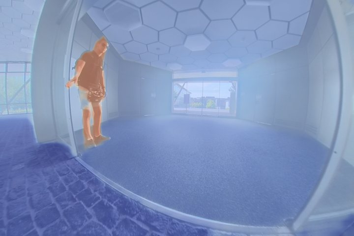
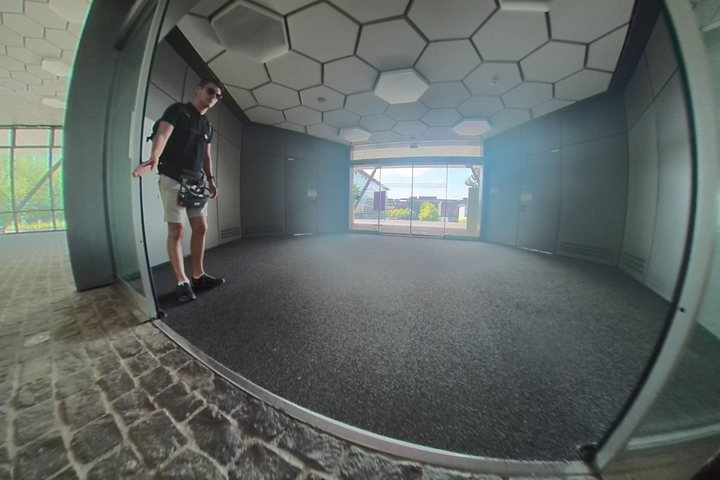
屋内ホール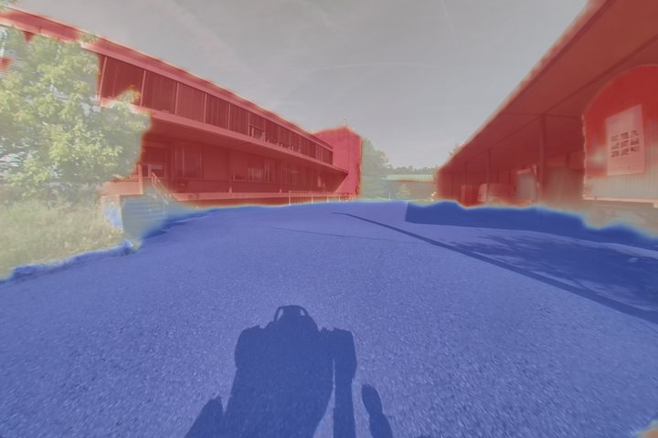
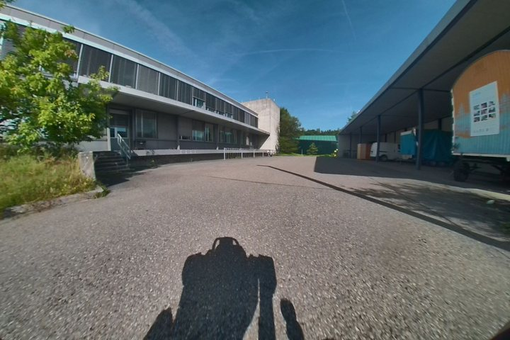
キャンパス
 林道
林道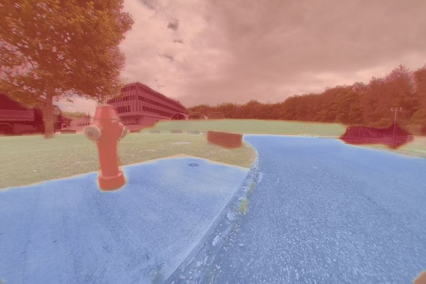
 試験場
試験場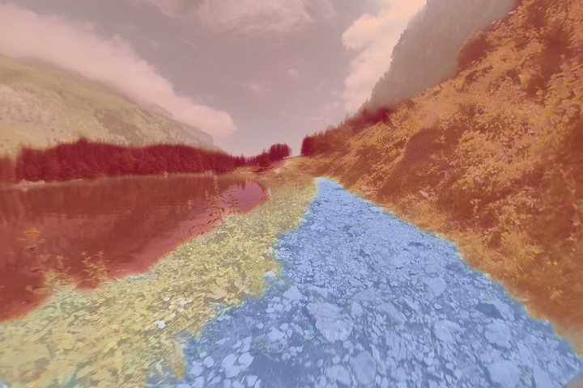
 ゼーアルプ湖
ゼーアルプ湖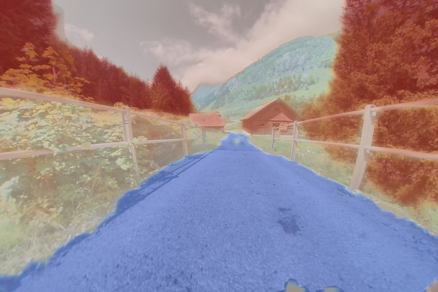
 山小屋
山小屋
 ツェルマット
ツェルマット
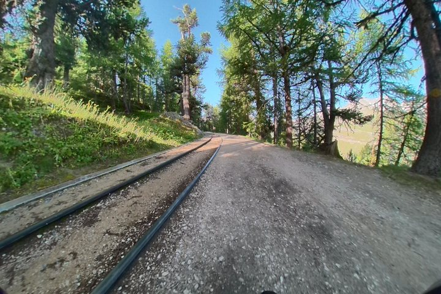
登山鉄道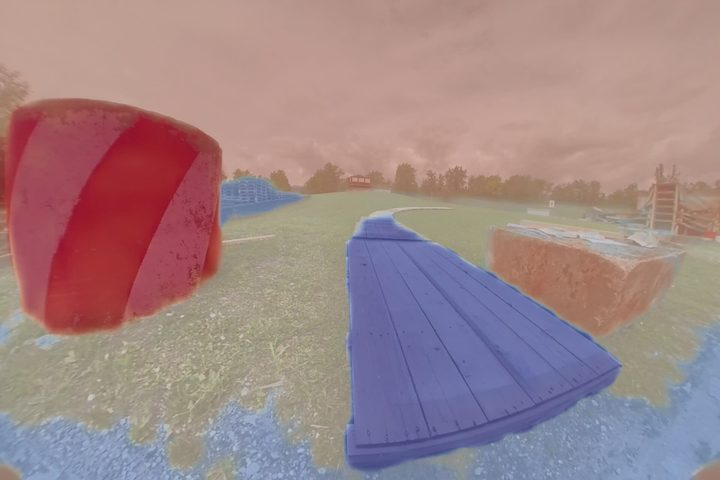
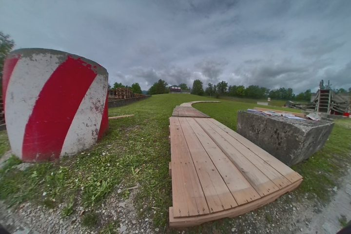
標識なし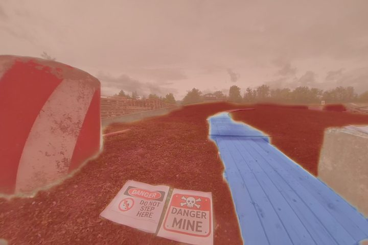
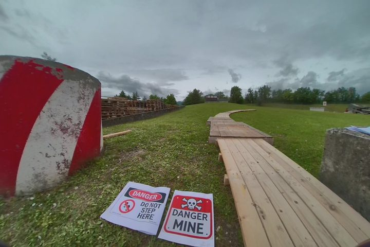
地雷の標識
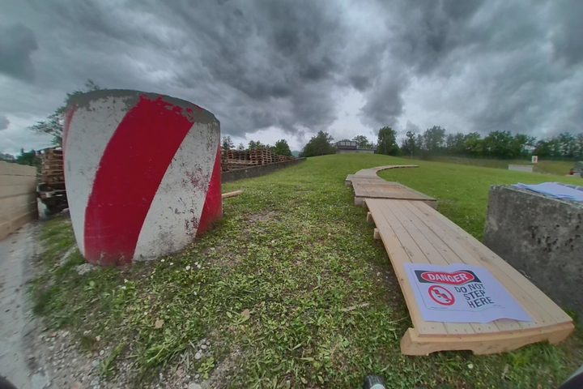
「踏まないで」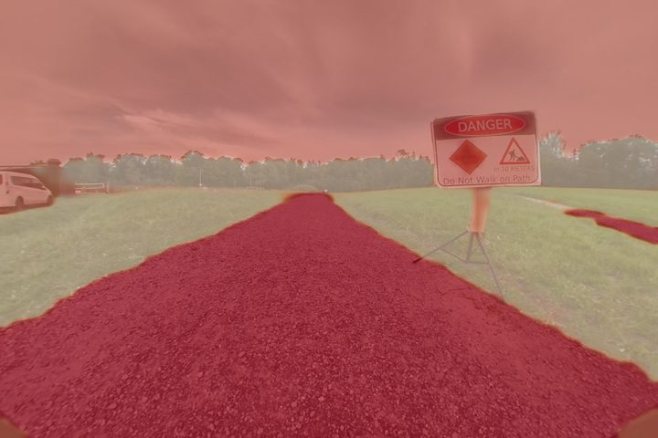
 危険標識
危険標識人が操縦すれば、このロボットはたいていの悪路を歩けます。自律移動に足りなかったのは、砂利道は通れるが湖には入れない、標識ひとつで道が通行止めになるといった常識です。視覚言語モデル（VLM）はその常識を備えています。ROAM（Robust Open-world Autonomous Mobility）は、VLM の常識をロボットの地図と脚の制御へつなぐシステムです。
VLM は座標も速度も出力しません。見えているものにラベルを付け、それぞれの危険度を評価するだけです。高速・高精度が求められる処理は、すべて後段のモジュールが担います。
いずれの画像もツェルマットのハイキング（2024年8月15日）の同一フレームで、値はすべてロボット上で記録したものです。

スイスアルプスでの2つの長距離ハイキングで、システムの限界を試しました。
動画を再生すると、連動してロボットが地図上を進みます。もう一方のカメラ映像は隅に小さく表示されます（クリックで切り替え）。ルートやマーカー、標高グラフをクリックするとその地点へ移動でき、右ドラッグ（または2本指）で地図を傾けられます。

動画を再生すると、連動してロボットが地図上を進みます。もう一方のカメラ映像は隅に小さく表示されます（クリックで切り替え）。ルートやマーカー、標高グラフをクリックするとその地点へ移動でき、右ドラッグ（または2本指）で地図を傾けられます。
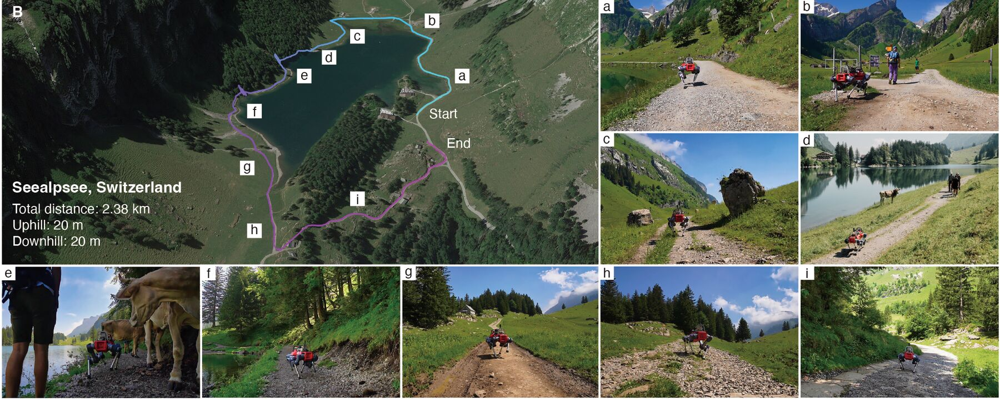
実際の3D地形の上を飛びながら、2つのハイキングルートをたどれます。ロボットは GPS の軌跡に沿って歩き、スクロールに合わせて搭載カメラ映像と各地点での認識結果が切り替わります。スクロール、または Play ボタンで体験できます。
エクスペディションへ（英語版） →フィールド実験の舞台裏を収めた記録映像です。準備の様子から、2.38 km の湖畔ルート、道に現れた牛、そしてロボットが何をしているかまでチームが解説します（約5分・英語音声）。
地形の形状だけでは、通れる道と通行止めの道を区別できません。ROAM は標識に書かれた文字や記号を読み取り、状況に応じた判断に活かします。
「踏まないで」危険標識ETH チューリッヒ・ヘンガーベルクキャンパスでの実験です。シナリオを選んで、各手法の挙動を比べてみてください。

Arche 試験場での実験です。ロボット搭載カメラの映像と、VLM のラベルから ROAM が生成したマップを並べています。
歩行ポリシーは、地形の高さに加えて「踏める場所」のレイヤーを参照します。このレイヤーの扱い方はシミュレーションで学習し、実機では VLM がその内容を生成します。
踏めない領域（赤）はパーリンノイズでランダムに生成します。ポリシーは足元の高さスキャンからこれを認識し、踏むとペナルティを受ける形で学習します。
Arche 試験場での実験です。壁の標識には「警告：缶が爆発します」と書かれています。
三人称視点の映像に、「踏める場所」のマップ（左上）と標高マップ（左下）を重ねています。
VLM がバナナの皮を「危険・歩行不可」と判断するため、ロボットは皮をよけて足を運びます。一方、意味情報を使わない比較手法はそのまま踏んでしまいます（ETHチューリッヒ屋上にて）。
ゴール地点だけを与えられたとき、ロボットはどこを歩くでしょうか。形状しか見なければ「平らならどこでも」通ってしまいます。ROAM は人間と同じように、舗装された道や除雪された通路、線路から離れた安全な側を選びます。
Arche 試験場と雪の積もった街なかの通路での実験です。いずれの走行でも、局所ナビゲーションポリシーに与えるのはゴール地点ひとつだけで、経由点やグローバルパスは使いません。ポリシーはリスクと優先度のマップから自律的にルートを選びます（ジオメトリのみの比較手法にも同じゴールを与えています）。

ETH ヘンガーベルクでの連続走行実験です。建物の中から出発し、キャンパスを横切って畑や森の小道、農道へと抜け、隣の村まで歩き切ります。最初から最後までシステムの設定は一切変えておらず、変化するのは VLM の目に映る風景だけです。
ロボットの前方カメラ（左）と、そこから ROAM が生成するリスク画像（右）、8倍速。下のグラフは、この走行中に VLM が出力した全推論結果（1列が1回分）と各ラベルのリスク値を示しています。床や柱から石畳・建物へ、さらに砂利・草・木へと認識が移り変わっていきます。グラフをクリックすると、動画の該当時点へ移動します。
台車と規制テープでふさがれた道に直面したとき、ロボットはどう行動するのか（4倍速）。各ステップをクリックすると該当場面へ移動できます（ヘンガーベルクにて）。
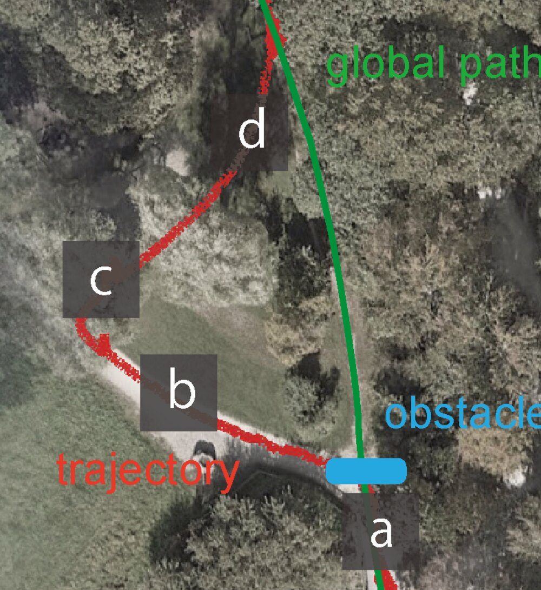
どの環境でもまったく同じシステムを動かしています。特定の場所に向けた追加データの収集や再学習は一切行っていません。
図2. 山道（A–E）、森（F）、草地（G）、キャンパス（H）、道路（I）、屋内（J–L）、煙（M）、線路（N）、標識（O）。
@article{miki2026roam, title = {Bridging vision-language reasoning and learned control for legged navigation in the wild}, author = {Miki, Takahiro and Schmid, Robin and Patel, Manthan and Tuna, Turcan and Richter, Julia and Nubert, Julian and Lee, Joonho and M{\"u}ller, Matthias and Hutter, Marco}, journal = {Science Robotics}, year = {2026}, doi = {10.1126/scirobotics.aee1549} }